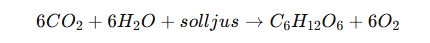

ODLING AV GULA ÄRTOR
INLEDNING
Vår första laboration gjorde vi med gröna ärtor, där vi lärde oss att
observera växters tillväxt och förstå fotosyntesens betydelse i
praktiken. I detta experiment odlar vi nu gula ärtor för att studera
skillnader i tillväxt och färg när de odlas i ljus respektive i mörker.
Växter är autotrofer, vilket innebär att de kan försörja sig själva utan
att utnyttja andra organismer. producerar energirik näring, glukos, med
hjälp av fotosyntesen Växterna tillverkar energin från de oorganiska
ämnena koldioxid och vatten, med hjälp av solljus:

Det vill säga: koldioxid + vatten + solljus → glukos + syrgas.
Växterna kallas också fotoautotrofer, vilket innebär att de
är beroende av solljus som energikälla.
I växtcellerna finns
organellen kloroplast, som innehåller pigmentet klorofyll - växternas
gröna färgämne. Klorofyll är avgörande för fotosyntesen eftersom det
absorberar solljus som kloroplasten använder för att omvandla koldioxid
och vatten till energirik näring. När solljuset fångas upp av klorofyll
får växterna sin gröna färg.


SYFTE
Syftet med denna laboration är att undersöka hur tillgången till ljus
påverkar växters tillväxt och utveckling. Genom att odla gula ärtor i
två olika miljöer - en med solljus och en i total mörker - vill vi
jämföra skillnader i längd, färg och allmän vitalitet hos plantorna.
Experimentet ska ge en tydligare förståelse för ljusets betydelse i
fotosyntesen och hur avsaknaden av ljus påverkar växternas förmåga att
producera energi (glukos) samt utveckla det gröna pigmentet klorofyll.
Vi vill också undersöka hur länge växterna kan växa med hjälp av den
lagrade energi som finns i fröet, och när deras tillväxt börjar avta.
UTFÖRANDE
Material
- 2 små krukor för odling
- 22 gula ärtor (11 ärtor per kruka)
- Planteringsjord
- Linjal för att mäta plantornas tillväxt
- Mobiltelefon för dokumentation med bilder under odlingsprocessen
Beskrivning
- Fyll varje kruka med planteringsjord.
- Placera 11 gula ärtor i varje kruka, jämnt fördelade.
- Vattna lätt och placera krukorna på en plats med bra ljus.
- Följ plantornas tillväxt regelbundet och mät längden på ärtplantorna med linjal.
- Ta bilder med mobiltelefonen vid olika stadier för att dokumentera utvecklingen.
Metod
Svenska gula ärtor och planteringsjord köptes i en livsmedelsaffär. Några av ärtorna lades i vatten i 24 timmar innan odlingen påbörjades för att påskynda groddningen. Två små krukor fylldes till hälften med planteringsjord. I varje kruka placerades 11 ärtor ungefär en centimeter ner i jorden. Efter plantering vattnades ärtorna försiktigt för första gången. För att undersöka påverkan av ljus på ärtornas tillväxt placerades ena krukan på en solbelyst plats vid ett fönster, medan den andra krukan placerades i ett mörkt skåp. Under odlingsperioden vattnades krukorna vid behov för att jorden skulle hållas lagom fuktig. Utvecklingen av ärtorna följdes noggrant varje dag under två veckor. Observationerna dokumenterades genom dagliga anteckningar och fotografering av odlingen för att kunna jämföra tillväxten mellan krukorna.
RESULTAT
Under de första dagarna av experimentet började ärtorna gro i både ljus-
och mörkerkrukorna, men med tydliga skillnader i tillväxt och färg. I
krukan som placerades i mörker började de flesta ärtor snabbt växa, men
de utvecklade en gul färg eftersom de saknade klorofyll och därmed inte
kunde genomföra fotosyntes. Tillväxten var initialt snabb, troligen tack
vare energireserverna som finns lagrade i själva ärtorna. Efter cirka
tio dagar började tillväxten avta, och plantorna såg trötta och
uttröttade ut, eftersom den lagrade energin började ta slut. Den längsta
plantan i mörkret nådde 42 cm efter två veckor.
I krukan som placerades i ljus var tillväxten initialt långsammare.
Endast ett fåtal ärtor började gro under den första veckan, men de
utvecklade gradvis en grön färg när klorofyllproduktionen kom igång.
Detta visar att fotosyntesen hade startat, vilket gav växterna möjlighet
att producera egen energi. Under den andra veckan ökade tillväxttakten
markant, och plantorna såg starka och friska ut. Den längsta plantan i
ljus nådde 20 cm, vilket var betydligt kortare än mörkerplantan, men den
var grön och vital, vilket indikerar att den hade förmåga till fortsatt
tillväxt. Klicka här för att läsa mer om hur
resultatet blev.